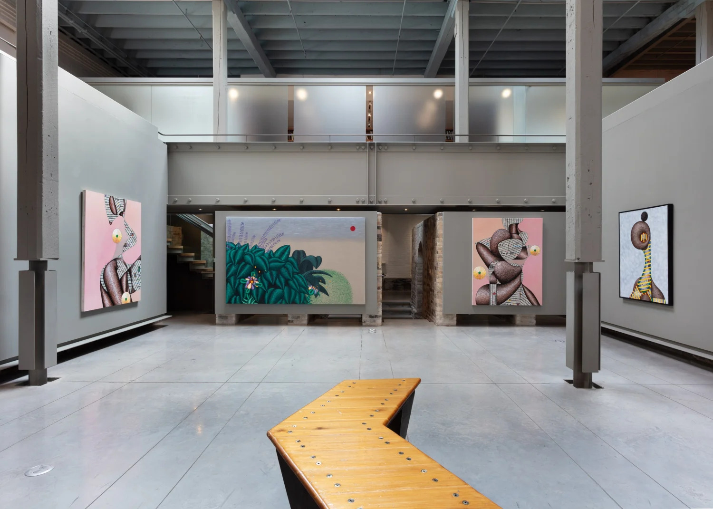
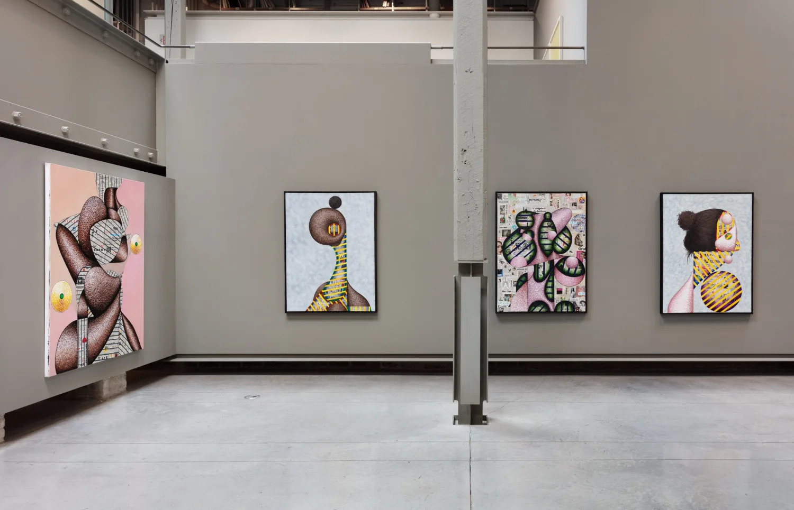
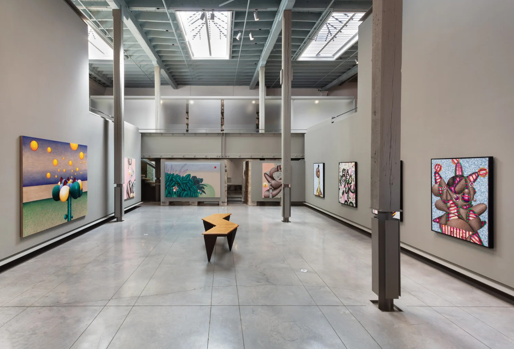
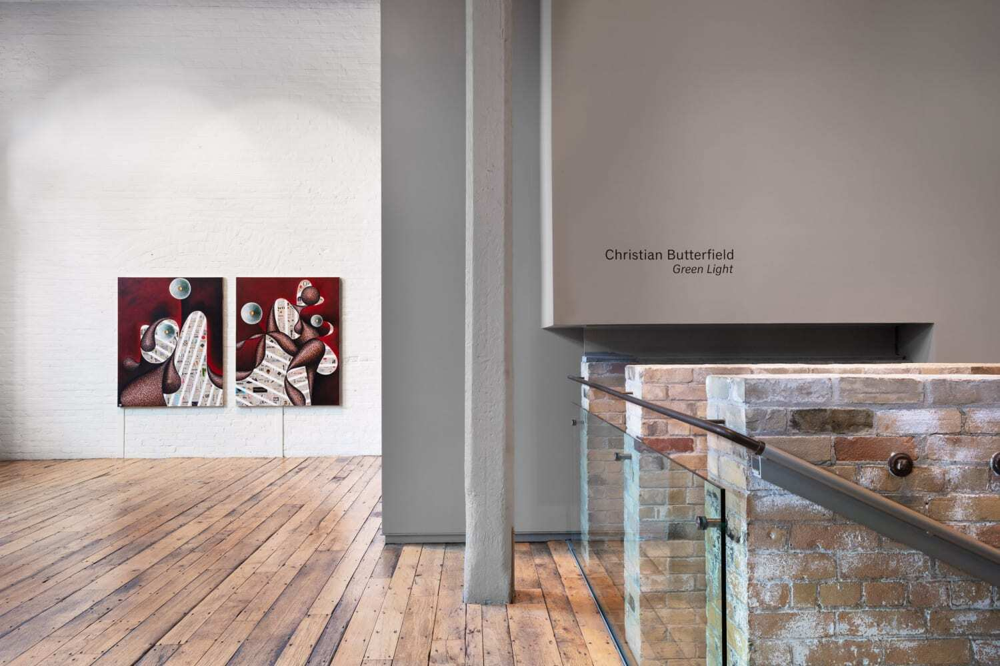
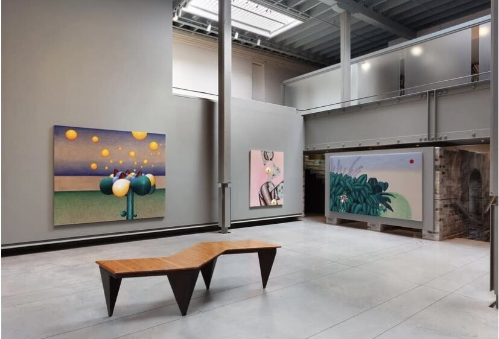
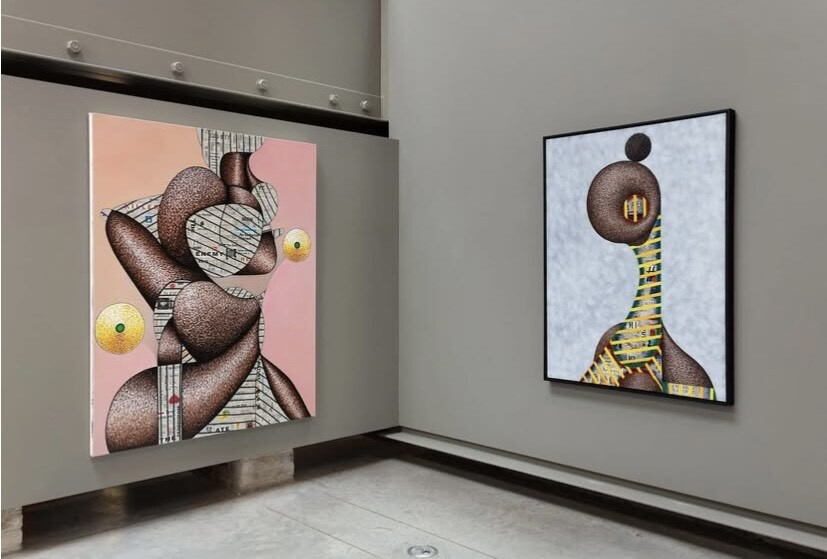
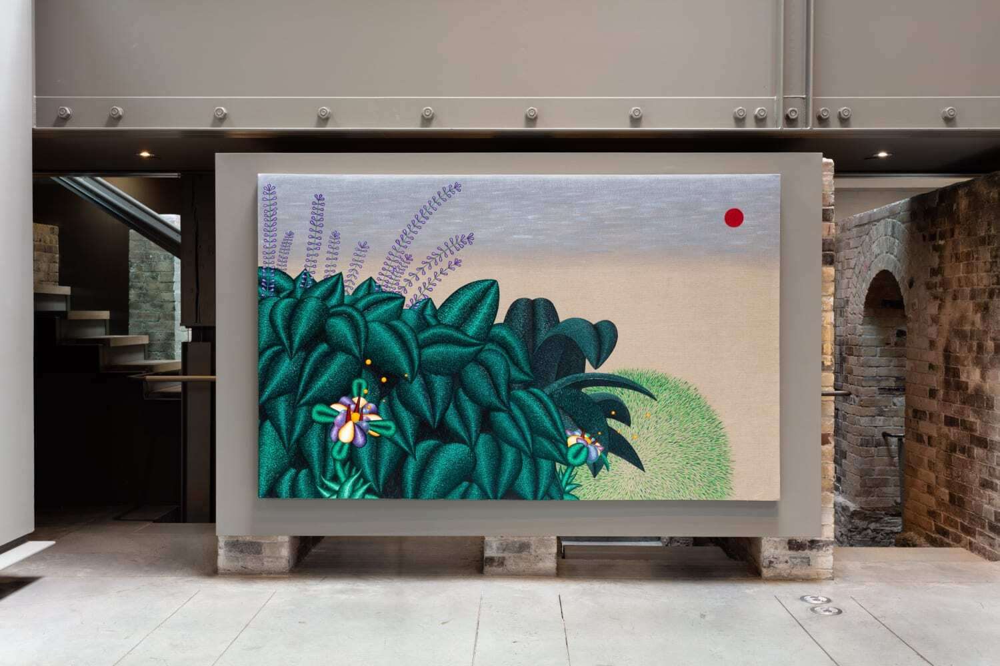
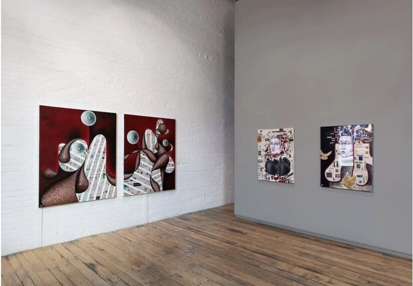

The canvases in this presentation highlight Butterfield’s exploration of painting as both spatial and psychological inquiry. Featuring personal portraits from his Cheeks and Cold series alongside works from Apology Flowers—including two new large-scale pieces—the exhibition balances representation and abstraction, structure and disorder. Many works begin with collaged newsprint, often from Time Magazine, which both timestamps the piece and contrasts media chaos with the structure of portraiture. This tension becomes the ground for Butterfield’s psychological engagement with his subjects—friends, family, or partners—while graphic stripes veil and reveal emotional vulnerability in a visual game of hide-and-seek.
“At a time when new connections are rare, Christian captures the experience of truly getting to know someone,” notes gallery owner Jane Corkin. “His collage-based language allows subjects to gradually unveil themselves, inviting viewers into shifting emotional states.”
The newest paintings mark a shift from collage toward painterly experimentation with light. Still anchored by surreal blooms from Apology Flowers, their glowing petals—lit from multiple directions—destabilize perspective and conjure an otherworldly atmosphere.